|
Roda JC - De Graafschap (1-0) 27 oktober 2007
|
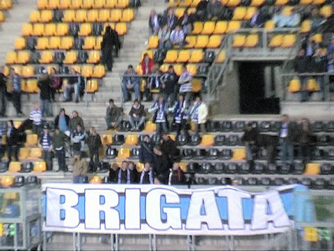
Klinkt hip!
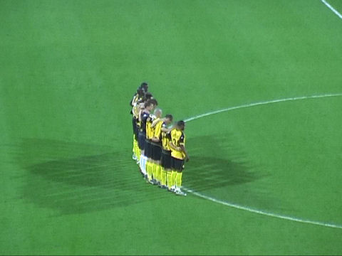
Een minuut stilte voor de onlangs overleden oud-Rodaspeler John Pfeiffer.
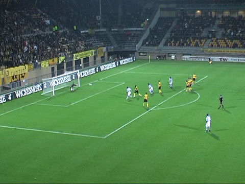
Roda begint matig en het eveneens niet erg aandringende De Graafschap krijgt de
eerste kans. Een schot van Hese wordt door Castro weggestompt.
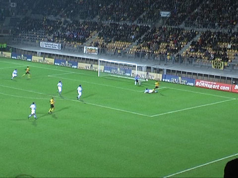
Het spelpeil is bedroevend. Het schamel opgekomen publiek veert heel even op als
Matondo een bal van Hadouir in het zijnet schiet.
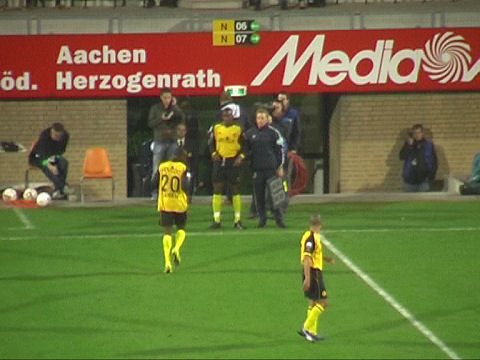
Atteveld kan het gebraggel niet meer aanzien en komt met een dubbele wissel:
Saeijs gaat eruit voor Sonkaya en Lamah moet eruit voor Cissé. De laatste
mutatie
komt de trainer op een hels fluitconcert te staan.
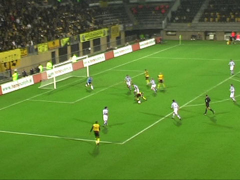
Na een donderspeech van Atteveld speelt Roda in de tweede helft met meer
bezieling. Ook de gezangen van west slaan over op zuid. Na krap een uur voetbal
begaat Vidarsson een overtredinkje op Hadouir. Scheidsrechter Bossen ziet er een
strafschop in.
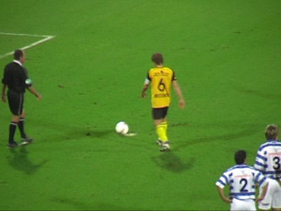
Aanvoerder Meeuwis gaat de pingel nemen.
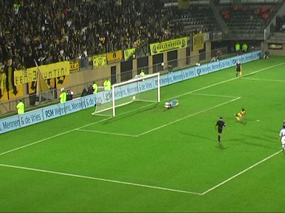
1-0: Meeuwis, (61').
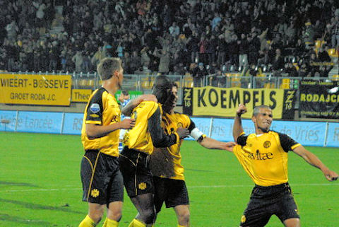
Ontlading in het veld en op de tribunes.
Foto: sv-online
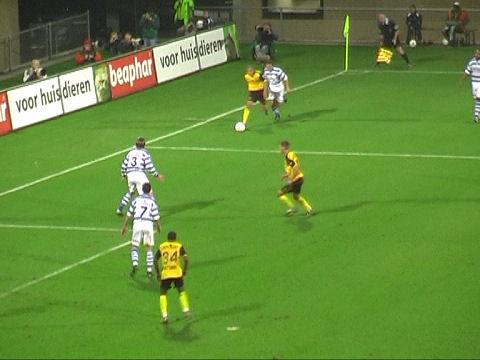
Na prachtig voorbereidend werk van Sonkaya plaatst hij de bal net niet scherp
genoeg voor de vrijstaande Matondo.
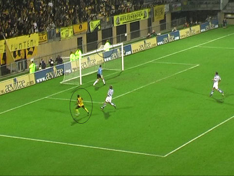
Matondo schiet op de lat.

Hadouir verprutst een uitstekende kans.
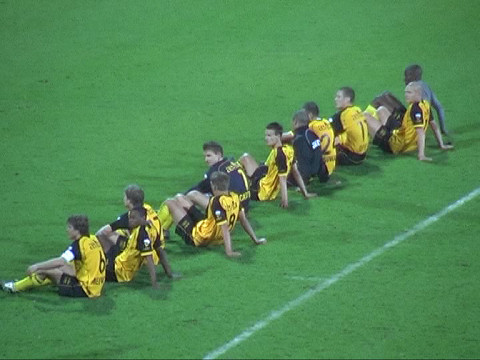
Opgedrongen clownesk gedrag, totaal misplaatst na deze marginale wedstrijd.
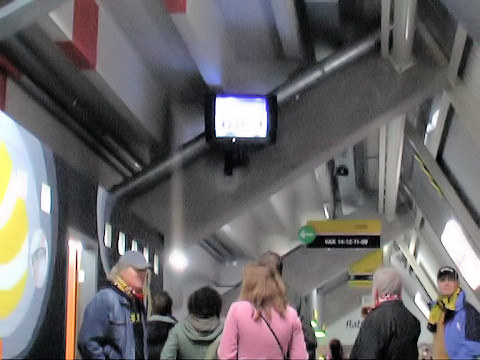
Enkele supporters volgen de persconferentie in de omloop. Oproep aan d'r Jerrie:
praat iets luider jefelligs.
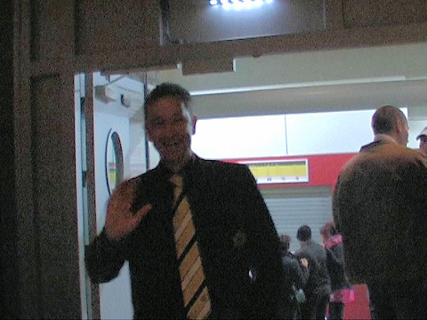
Huub Narinx komt enthousiast de Kickoff binnen.
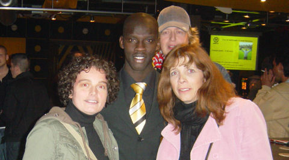
Er kwamen diverse spelers waaronder Bouchiba, Saeijs en Kah.
©
Koempels Pleasure Dome
|